Bishop (Lucas Bishop) (Terre-811)
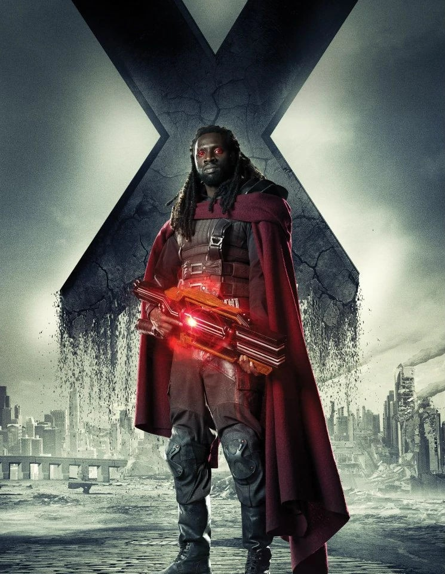
Origines :
Lucas Bishop est né vers la fin du XXIe siècle, dans un futur alternatif de l'univers Marvel (la Terre-811), une réalité au sein de laquelle les robots chasseurs de mutants, les Sentinelles ont pris le contrôle des États-Unis.
Dans cette ligne temporelle, le professeur Charles Xavier et la plupart des membres des X-Men ont été tués.
Les mutants survivants ont été traqués pendant des années et tués ou incarcérés dans des camps de concentration, après qu’un jeune mutant ait causé la mort de millions de personnes durant un événement dénommé la « Guerre de Six Secondes ».
Ce désastre poussa alors les gouvernements à traquer et exterminer les mutants.
C’est dans un de ces camps que Bishop voit le jour, ainsi que sa sœur Shard.
Tous les deux ont reçu dès leur plus jeune âge un tatouage en forme de « M » au dessius de l’œil droit, afin d’être immédiatement identifiés comme des mutants.
Alors qu’il est enfant, Lucas voit ses parents se faire tuer.
Le jeune garçon regrette alors de n'avoir pas eu l’opportunité de tuer le messie des mutants, ce qui aurait empêché l’avènement d’une telle réalité.
Vivant dans le camp avec sa grand-mère et sa sœur, à la mort de la vieille femme, les deux enfants partent vivre au Nevada.
Ils intégrèrent le XSE (Xavier's Security Enforcers), une milice mutante qui s’inspire des X-Men.
Au cours d'une mission, Shard est mortellement blessée mais son essence vitale est préservée sous la forme d'un hologramme, grâce à la technologie Stark/Fujikawa.
Bishop et son équipe XSE sont à la poursuite d'un criminel mutant, Trevor Fitzroy, qui peut voyager dans le temps grâce aux pouvoirs d'un autre mutant, Bantam.
Lorsque Fitzroy sacrifie les Hellions pour faire évader l'ensemble des prisonniers de son époque via un portail géant, l'équipe de Bishop traverse également le portail pour intervenir.
Tuant tous les criminels qui leur résistent, ils sont confrontés à l'équipe Or des X-Men (après un combat contre le Roi d'Ombre, les X-Men ont constitué deux équipes).
Tout d'abord incrédule concernant leur identité, Bishop finit par se rendre à l'évidence.
De leur côté, les X-Men le poursuivent pour éviter que lui et ses compagnons ne fassent plus de dégâts, les XSE ne s'embarrassant pas trop de considérations pour les dommages collatéraux ou pour la survie des criminels qu'ils pourchassent.
Ses deux compagnons tués, Bishop est sauvé par les X-Men.
Ramené à Westchester, il est confronté au Professeur Xavier en tête à tête; celui-ci décide, à la grande surprise de ses élèves, d'intégrer Bishop dans l'équipe Or.
Dans le futur de Bishop, les X-Men ont été tués au combat, sans que l'on connaisse l'agresseur.
Il ne reste que deux traces de leurs derniers moments: un vieil homme, appelé « le Témoin » qui semble avoir beaucoup côtoyé l'équipe, et une vidéo faite par Jean Grey juste avant de se faire tuer qui appelle à l'aide les autres équipes X, un traître ayant abattu tous les autres X-Men.
Si les X-Men doutent de son histoire, Bishop y croit fortement et a l'intention de démasquer le traître avant la mort de ses nouveaux coéquipiers.
Il découvre alors que « le Témoin » n'est autre que Gambit, ce que le vieil homme ne lui avait jamais avoué.
Gambit passe alors en tête des suspects, même si les X-Men n'ont aucun doute sur la fidélité de ce dernier.
Bishop s'intègre peu à peu à l'équipe Or.
Tornade, réticente face aux méthodes brutales de Bishop, lui apprend peu à peu celles des X-Men.
Dans le même temps, Xavier, inquiet de ce futur que lui présente son nouvel élève, essaie de reprendre l'initiative face aux menaces qui pèsent sur le monde des mutants.
Bishop se retrouve donc en première ligne pour combattre les Acolytes et Magnéto, les Morlocks et Mikhail Rasputin, Stryfe, etc.
Lorsque Légion tue son père Charles Xavier dans une crise de folie, provoquant l’Ère d’Apocalypse, les X-Men et Légion disparaissent, emportés par le paradoxe temporel.
Bishop, déjà exilé dans le temps, reste seul sur place.
Il réapparaît dans la vie des X-Men quelque quarante ans plus tard, et réussit à convaincre Magnéto de tenter de changer à nouveau le passé.
Magnéto, malgré les sacrifices que cela entraînera, regroupe l'ensemble de ses troupes pour trouver un moyen de projeter de nouveau Bishop dans le temps, afin que la continuité de la Terre-616 soit rétablie.
Revenu au moment où Légion s'apprête à frapper, Bishop se sacrifie en recevant le coup destiné à Magnéto.
Il entraîne Légion avec lui dans la mort.
Quant au Bishop jeune, bien qu'il ait aperçu et reconnu son double, il semble qu'il ne se souvienne plus de cette rencontre.
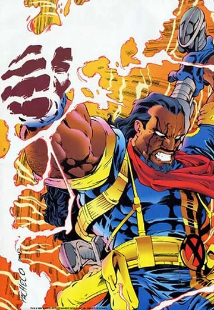
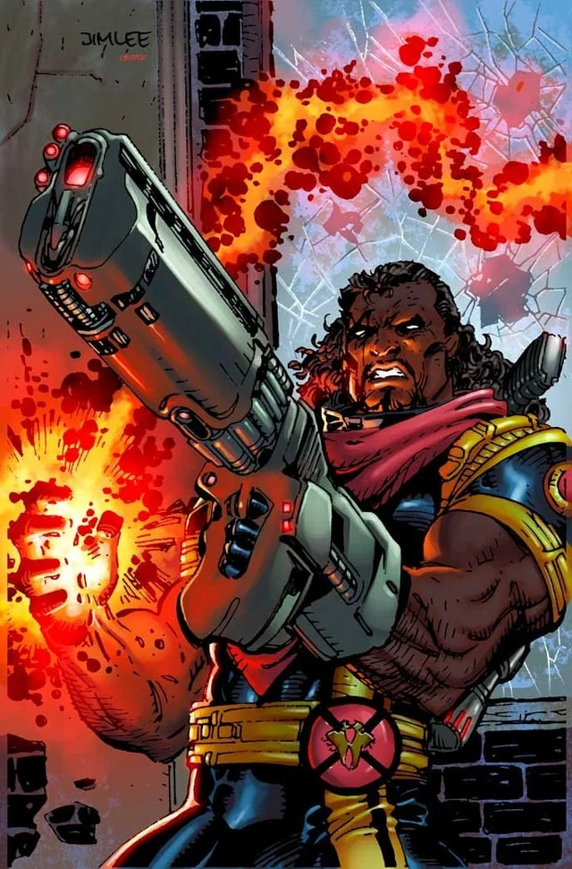
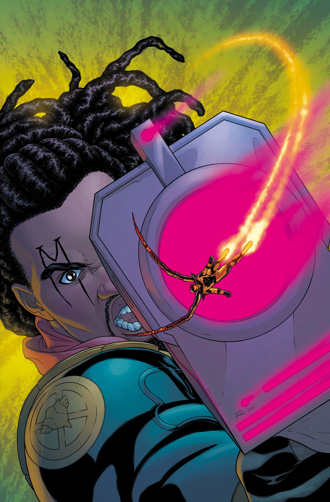
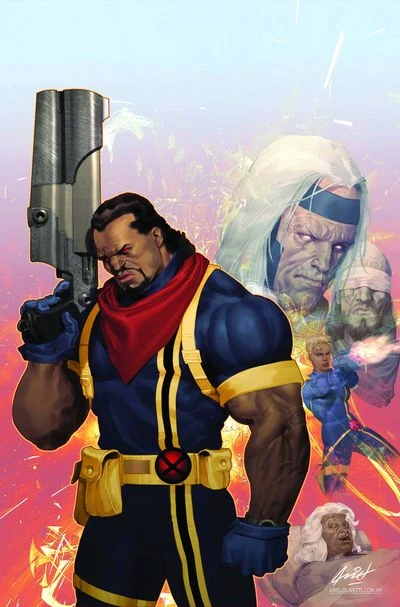
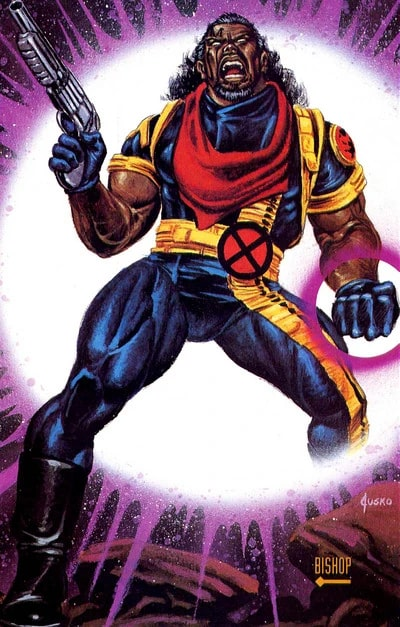
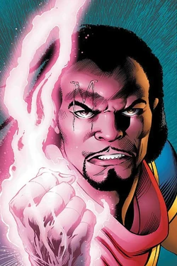
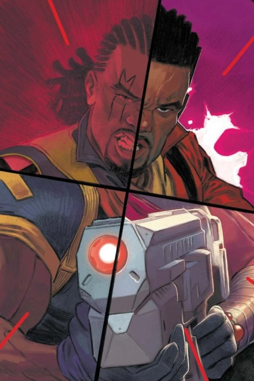
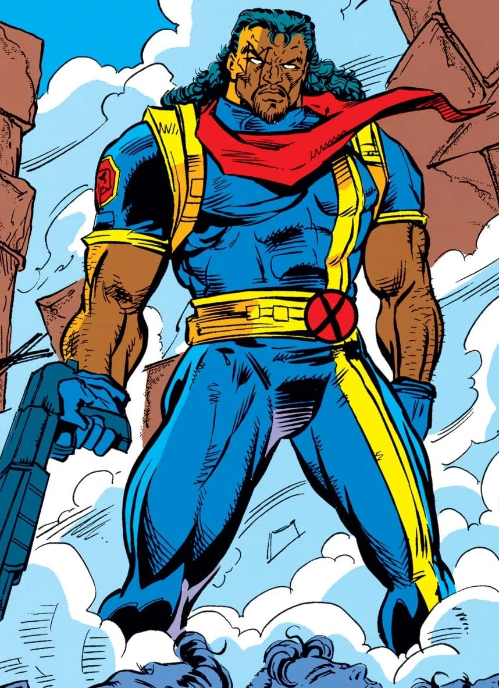
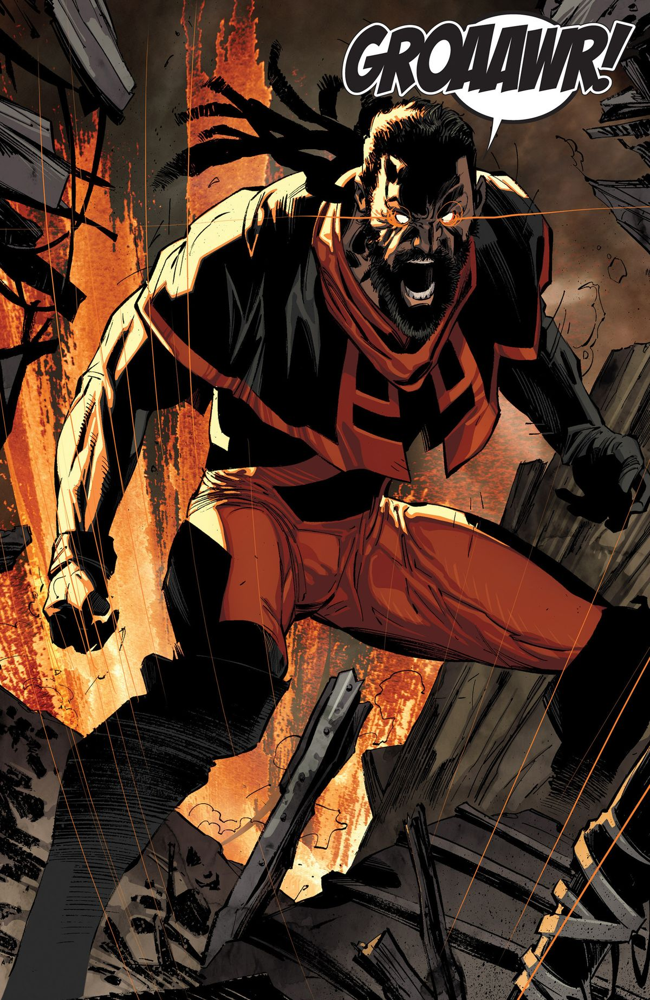
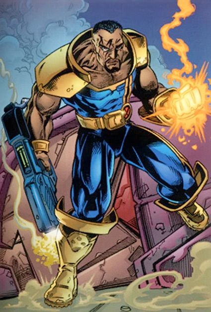
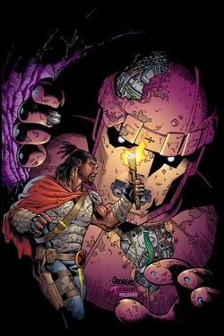
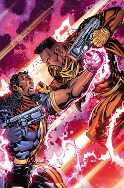
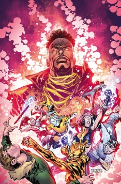
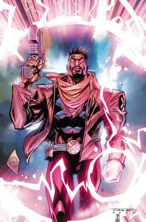
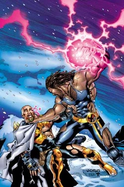
Personnalité :
Ayant grandi dans un futur ravagé, Bishop s'est forgé une mentalité de survivant, déterminé et inflexible.
Il est loyal envers ceux qu'il considère comme des « amis » où « alliés », mais garde tout de même ses distances.
Il est assez stoïque, et réservé, mais n'hésite pas à adopter un comportement sévère et militaire quand il le faut.
Capacités :
Bishop a la capacité d'absorber ou de décharger de l'énergie pour l'utiliser lui-même ou pour la projeter sous plusieurs formes.
Son pouvoir lui permet aussi de « pomper » la puissance énergétique des ennemis qui tenteraient de l'immobiliser.
En complément de ses pouvoirs, Bishop possède une formation d'officier de police, et a été formé pendant plusieurs années aux techniques de combat armé ou à mains nues.
C'est un excellent tireur, qui utilise fréquemment des pistolets laser ou des armes à feu.
Après avoir eu son bras droit arraché, il l'a remplacé par une prothèse cybernétique de très haute technologie, qu'il a volée au mutant Forge.
Celle-ci est alimentée en énergie nucléaire et comporte de nombreux armements, ainsi qu'un système de voyage temporel intégré.

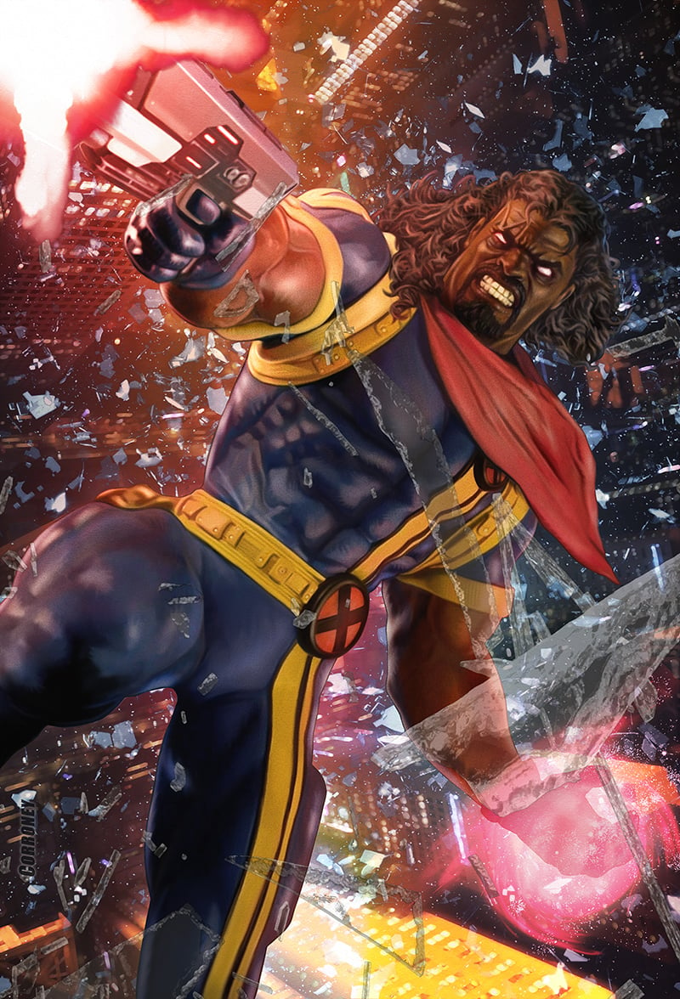
Costume :
Bishop porte une tenue typique des X-Men, revisitée à sa sauce.
Son uniforme est majoritairement bleu marine avec des détails jaunes et rouges.
Il porte souvent une bandoulière en cuir, qui traverse son corps en « X » dans laquelle il transporte des munitions ou des grenades.
Il a également un tatouage représentant un « M » au dessus de l’œil droit, marque imposée aux mutants dans son monde d'origine.
Il porte également un fusil énergétique high-tech venant de son époque, qui complète son look de soldat du futur, et le distingue des autres X-Men, plus classiques.
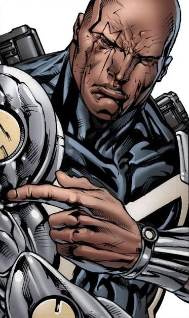
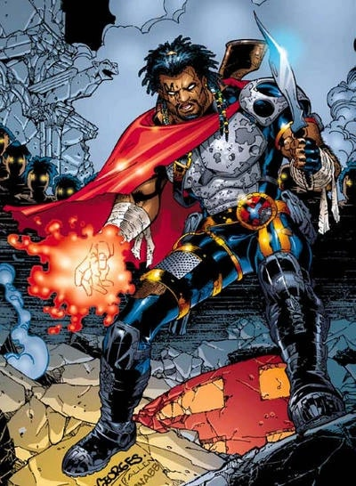
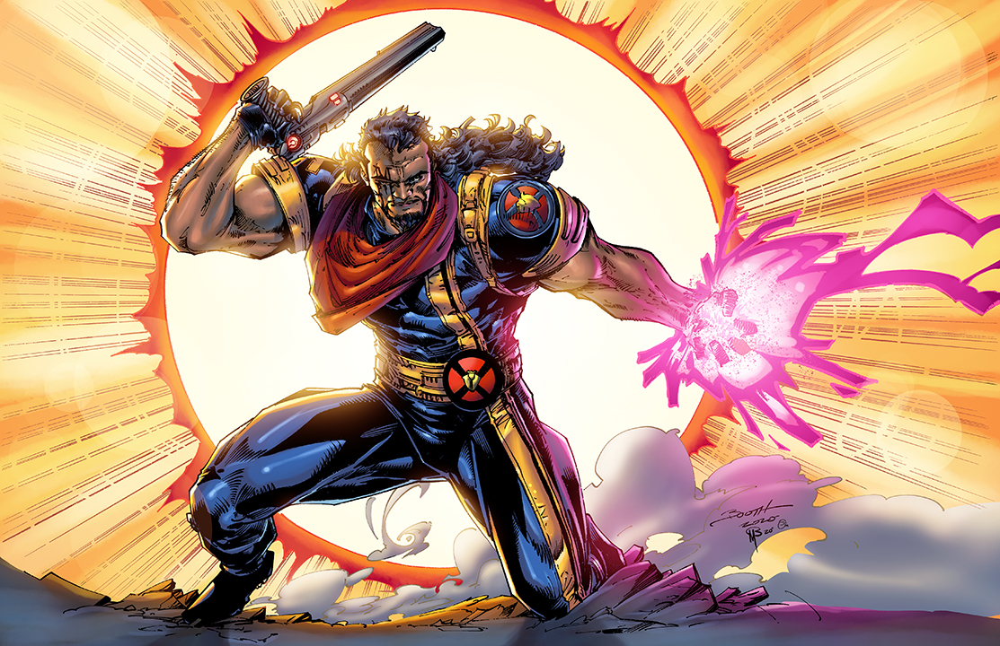
.jpg)
Les principaux ennemis de Bishop
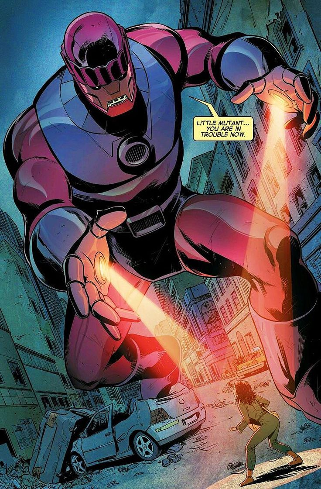
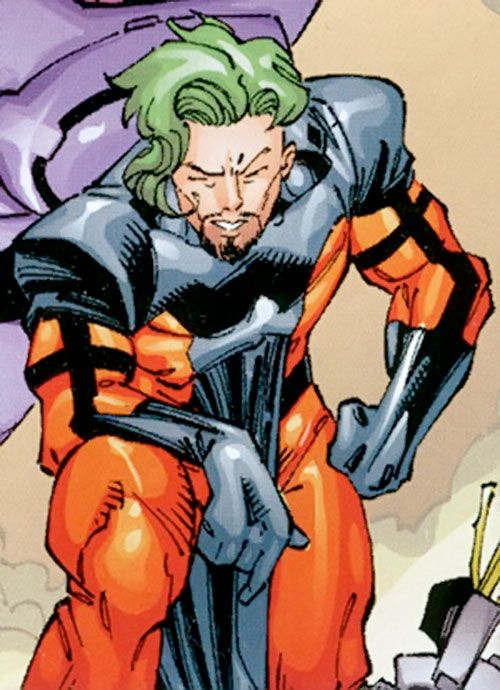
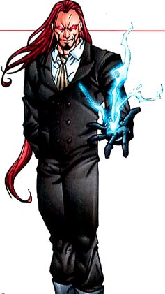

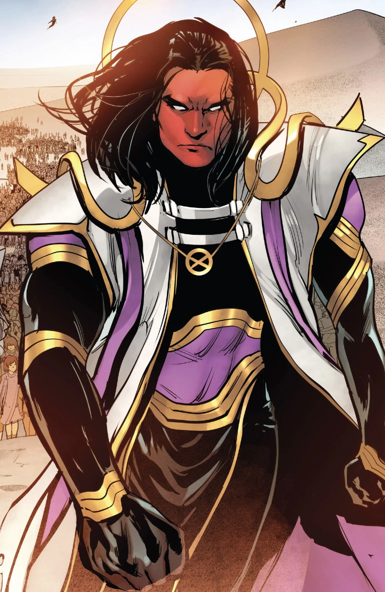
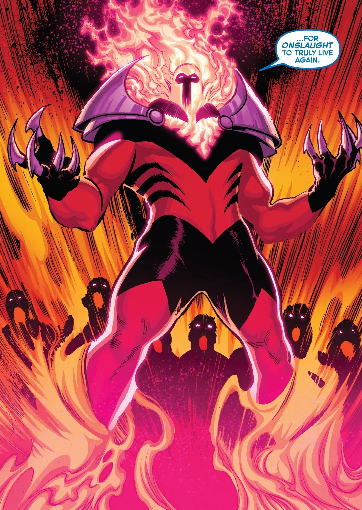
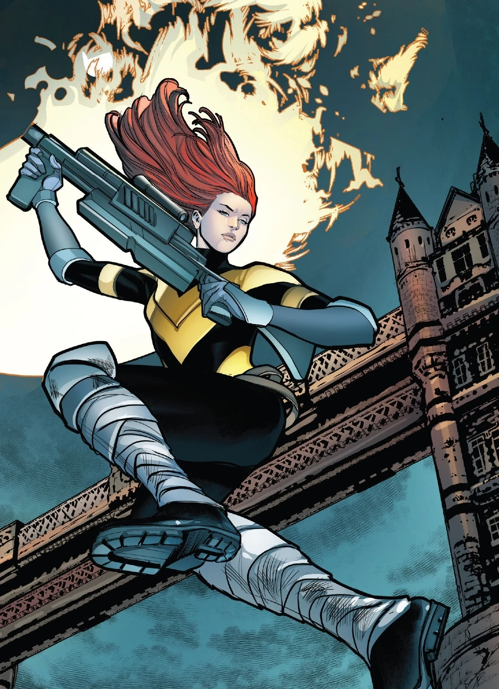
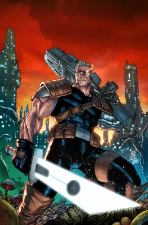
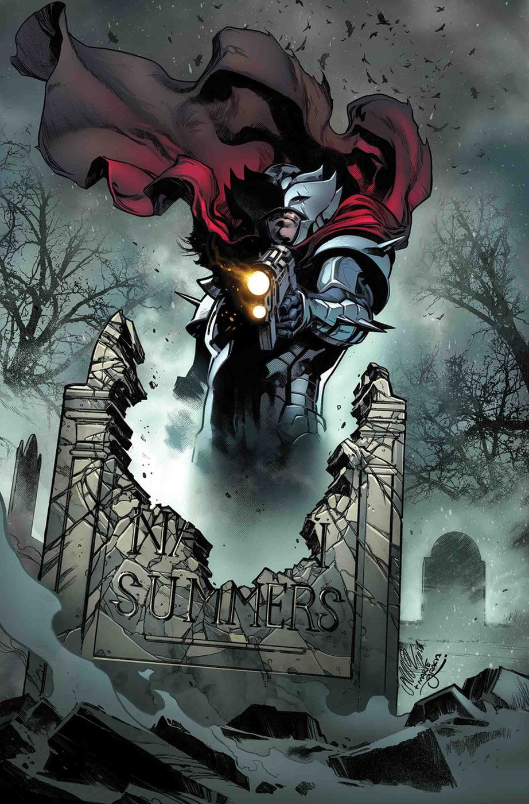
Équipes affiliées